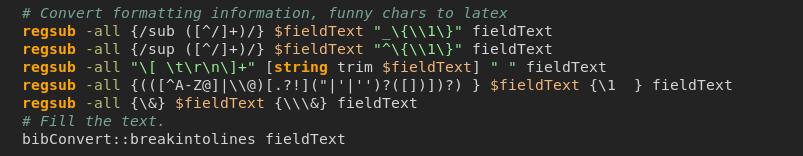

The hl_tcl package is a syntax highlighter for Tcl/Tk code.
It can be applied to a Tk text widget or to a static html page.
The Tk text widget may be made read-only or editable. Also, the hl_tcl may take an argument, sort of command to watch the viewing / editing.
When applied to html pages, the hl_tcl highlights Tcl/Tk code snippets embedded between <code> </code> tags.
The hl_tcl has highlighted its own code in Reference.
The Tcl being incredibly dynamic language sets a lot of problems before any Tcl syntax highlighter. Probably, a Tcl string spanning several lines is the main challenge at that.
Below is a line that brings most (not hl_tcl in Reference) of Tcl highlighters in a stupor:
if {[set i [string first {"} $line $i]]==-1} {return no}
... as well as this one:
regsub -all {(([^A-Z@]|\\@)[.?!]("|'|'')?([])])?) } $fieldText {\1 } fieldText
Good luck for a highlighter when the second line (or similar) follows the first, giving it a matching quote and thus bringing it out of the stupor.
Those stand-alone quotes are widely used in regexp and regsub Tcl commands, so that when a honest Tcl highlighter (like Geany) stumbles upon a quote, it tries its best to highlight the rest of code as a string, till the next occurence of unescaped quote.
Thus, we have
... instead of

There are "tricky" highlighters (like Gedit) that behave more wisely at the stumbling a quote: they permit only a one-line Tcl strings (if not continued with \), so that the string highlighting would be most likely finished in the same line it started. No problems except for this silly line. And no delays due to the highlighting the rest of code...
... as seen in:
Geany. Probably, the best Tcl highlighter and the great programming tool at that. Still, it has few drawbacks:
${var} in contrast with $varset a 1fix or set b #abxxx looks a bit peculiarset c {#000000 #FFFFFF} is quite a legal Tcl command, not for Geanymethod, mixin, my etc.)Vim. Probably, the fastest Tcl highlighter. Great and awful. Nonetheless:
set set set is highlighted as three set commands ;)Kate. As nearly good as Geany, still doesn't highlight ttk and TclOO.
TKE. Written in Tcl/Tk, it might be the best of all to highlight the Tcl/Tk. In spite of its suspended state it still can. Has issues with highlighting strings and the performance.
Pluma and Gedit seem to use the same Tcl highlighting engine that gives rather good results. Still, the mentioned above drawbacks are here too. And no highlighting of tk, ttk, TclOO.
Notepad++. Very fast Tcl highlighter. Still, the mentioned above drawbacks are here all the same. No highlighting of tk, ttk, TclOO. Plus an obsolete version of Tcl, i.e. no highlighting lset, lassign etc.
To develop a correct (and fast at that) Tcl highlighter, we would have to be familiar with Tcl core. Though, no hopes to achieve this ideal through repeating the core in Tcl/Tk or massively using the regular expressions.
That said, while implementing Tcl/Tk highlighter in pure Tcl/Tk, we might hope to achieve a reasonable compromise between the performance and the elimination of blunders.
It seems hl_tcl got close to this compromise. Specifically, it provides:
proc, method, oo::class etc.) and return;#regexp and regsub expressions containing a quoteThe hl_tcl doesn't provide the following:
These are in no way critical drawbacks. A bit less florid Tcl code might be even preferable.
The Tcl can arrange its pitfalls for hl_tcl (I know where). Also, tricky practices or tastes can make a fool of hl_tcl. Still hopefully these pranks are few and rare to encounter.
The code below:
package require hl_tcl #... proc ::stub {} {puts "stub: [$::txt index end]"} #... ::hl_tcl::hl_init $::txt #... inserting a text into the text widget ::hl_tcl::hl_text $::txt $readonly $multi ::stub
sets an example of hl_tcl usage. Here are the details:
::stub is a procedure to watch the text editing; here it simply puts out the text's last indexhl_init is called before filling the text widget with a Tcl codehl_text is called to highlight the Tcl code of the text widget and view/edit itThe hl_init takes arguments:
The args may contain pairs option value where option may be:
The hl_text takes arguments:
Other hl_tcl procedures are:
hl_readonly gets/sets a read-only mode and/or a command to watch a text widget at viewing/editing ithl_colors gets/sets colors of highlightinghl_font gets/sets font attributes for text widgethl_all updates ("rehighlights") all highlighted existing text widgetsSee details in Reference.
In the hl_tcl.zip, there is a Tcl script named tcl_html.tcl that highlights Tcl snippets of static html page(s).
It runs as follows:
tclsh tcl_html.tcl "glob-pattern-of-html-files"
For example:
tclsh ~/UTILS/hl_tcl/tcl_html.tcl "~/UTILS/mulster/tasks/ruff/src/*"
In this example, the html files are located in ~/UTILS/mulster/tasks/ruff/src/*.
Perhaps, you would want to modify the tcl_html.tcl, this way:
<code class="tcl"> with html tags starting the Tcl code in your html files</code> with html tags finishing the Tcl code in your html filesSource (hl_tcl.zip)
Updates ("rehighlights") all highlighted and existing text widgets.
| dict of options |
proc ::hl_tcl::hl_all {args} { # Updates ("rehighlights") all highlighted and existing text widgets. # args - dict of options # See also: hl_init if {[info exists ::hl_tcl::my::data(LIST_TXT)]} { foreach wattrs $::hl_tcl::my::data(LIST_TXT) { lassign $wattrs txt ro multi com2 if {[winfo exists $txt]} { hl_init $txt {*}$args hl_text $txt $ro $multi $com2 } } } }
Sets/gets default colors for highlighting.
| text widget's path |
| list of default colors |
If 'args' omitted, returns a list of default colors.
proc ::hl_tcl::hl_colors {txt args} { # Sets/gets default colors for highlighting. # txt - text widget's path # args - list of default colors # If 'args' omitted, returns a list of default colors. if {[llength $args]} { set ::hl_tcl::my::data(COLORS,$txt) $args return } elseif {[info exists ::hl_tcl::my::data(COLORS,$txt)]} { return $::hl_tcl::my::data(COLORS,$txt) } elseif {$::hl_tcl::my::data(DARK_EDITOR,$txt)} { set clrCOM orange set clrCOMTK #fe9880 set clrSTR lightgreen set clrVAR #f1b479 set clrCMN #76a396 set clrPROC #d485d4 } else { set clrCOM #923B23 set clrCOMTK #7A040E set clrSTR #035103 set clrVAR #4A181B set clrCMN #646464 set clrPROC #A106A1 } return [list $clrCOM $clrCOMTK $clrSTR $clrVAR $clrCMN $clrPROC] }
Sets/gets default font for highlighting.
| text widget's path |
| attributes of default font; optional, default "" |
If 'fontattr' omitted, returns the attributes of default font.
proc ::hl_tcl::hl_font {txt {fontattr {}}} { # Sets/gets default font for highlighting. # txt - text widget's path # fontattr - attributes of default font # If 'fontattr' omitted, returns the attributes of default font. if {$fontattr ne ""} { set ::hl_tcl::my::data(FONT,$txt) $fontattr return } elseif {[info exists ::hl_tcl::my::data(FONT,$txt)]} { return $::hl_tcl::my::data(FONT,$txt) } set font0 [font configure TkFixedFont] dict set font0 -size 12 return $font0 }
Initializes highlighting.
| text widget's path |
| dict of options |
The 'args' options include:
-dark | flag "the text widget has dark background" |
-colors | list of colors: clrCOM, clrCOMTK, clrSTR, clrVAR, clrCMN, clrPROC |
-font | attributes of font |
This procedure has to be called before writing a text in the text widget.
proc ::hl_tcl::hl_init {txt args} { # Initializes highlighting. # txt - text widget's path # args - dict of options # The 'args' options include: # -dark - flag "the text widget has dark background" # -colors - list of colors: clrCOM, clrCOMTK, clrSTR, clrVAR, clrCMN, clrPROC # -font - attributes of font # This procedure has to be called before writing a text in the text widget. set ::hl_tcl::my::data(REG_TXT,$txt) "" ;# disables Modified at changing the text set ::hl_tcl::my::data(DARK_EDITOR,$txt) [expr {[dict exists $args -dark] && [dict get $args -dark]}] if {[dict exists $args -colors]} { set ::hl_tcl::my::data(COLORS,$txt) [dict get $args -colors] } if {[dict exists $args -font]} { set ::hl_tcl::my::data(FONT,$txt) [dict get $args -font] } hl_readonly $txt no }
Makes the text widget be readonly or gets its 'read-only' state.
| text widget's path |
| flag "the text widget is readonly" optional, default "" |
| command to be called after changes; optional, default "" |
If 'ro' argument is omitted, returns the widget's 'read-only' state.
proc ::hl_tcl::hl_readonly {txt {ro {}} {com2 {}}} { # Makes the text widget be readonly or gets its 'read-only' state. # txt - text widget's path # ro - flag "the text widget is readonly" # com2 - command to be called after changes # If 'ro' argument is omitted, returns the widget's 'read-only' state. if {$ro eq ""} { return [expr {[info exists ::hl_tcl::my::data(READONLY,$txt)] && $::hl_tcl::my::data(READONLY,$txt)}] } set ::hl_tcl::my::data(READONLY,$txt) $ro set newcom "::$txt.internal" if {[info commands $newcom] eq ""} {rename $txt $newcom} set com "[namespace current]::my::Modified $txt" if {$com2 ne ""} {append com " ; $com2"} if {$ro} {proc ::$txt {args} " switch -exact -- \[lindex \$args 0\] \{ insert \{$com2\} delete \{$com2\} replace \{$com2\} default \{ return \[eval $newcom \$args\] \} \}" } else {proc ::$txt {args} " set _res_ \[eval $newcom \$args\] switch -exact -- \[lindex \$args 0\] \{ insert \{after idle {$com}\} delete \{after idle {$com}\} replace \{after idle {$com}\} \} return \$_res_" } }
Highlights Tcl code of a text widget.
| text widget's path |
| flag "the text widget is readonly" optional, default no |
| flag "process multi-line strings" ("yes" by default); optional, default "" |
| command to be called after each text change; optional, default "" |
proc ::hl_tcl::hl_text {txt {ro no} {multi {}} {com2 {}}} { # Highlights Tcl code of a text widget. # txt - text widget's path # ro - flag "the text widget is readonly" # multi - flag "process multi-line strings" ("yes" by default) # com2 - command to be called after each text change if {$multi ne ""} {set ::hl_tcl::my::data(MULTI_LINE_STR) $multi} if {[info exists ::hl_tcl::my::data(FONT,$txt)]} { set font0 $::hl_tcl::my::data(FONT,$txt) } else { set font0 [font configure TkFixedFont] dict set font0 -size 12 } set font1 [set font2 $font0] $txt tag config tagSTD -font "$font0" $txt tag add tagSTD 1.0 end dict set font1 -weight bold dict set font2 -slant italic lassign [hl_colors $txt] clrCOM clrCOMTK clrSTR clrVAR clrCMN clrPROC $txt tag config tagCOM -font "$font1" -foreground $clrCOM $txt tag config tagCOMTK -font "$font1" -foreground $clrCOMTK $txt tag config tagSTR -font "$font0" -foreground $clrSTR $txt tag config tagVAR -font "$font0" -foreground $clrVAR $txt tag config tagCMN -font "$font2" -foreground $clrCMN $txt tag config tagPROC -font "$font1" -foreground $clrPROC my::HighlightAll $txt if {![info exists ::hl_tcl::my::data(BIND_TXT,$txt)]} { bind $txt <KeyPress> [list + [namespace current]::my::Mempos $txt] bind $txt <ButtonPress-1> [list + [namespace current]::my::Mempos $txt] set ::hl_tcl::my::data(BIND_TXT,$txt) yes } set ::hl_tcl::my::data(REG_TXT,$txt) "1" set txtattrs [list $txt $ro $multi $com2] if {![info exists ::hl_tcl::my::data(LIST_TXT)] || [set i [lsearch -index 0 $::hl_tcl::my::data(LIST_TXT) $txt]]==-1} { lappend ::hl_tcl::my::data(LIST_TXT) $txtattrs } else { set ::hl_tcl::my::data(LIST_TXT) [lreplace $::hl_tcl::my::data(LIST_TXT) $i $i $txtattrs] } hl_readonly $txt $ro $com2 }
The ::hl_tcl::my namespace contains procedures for the "internal" usage by hl_tcl package.
All of them are upper-cased, in contrast with the UI procedures of hl_tcl namespace.
Auxiliary procedure to process the ending character of line.
| variable's name for 'k' |
| variable's name for 'line' |
| variable's name for 'i' |
proc ::hl_tcl::my::AuxEnding {kName lineName iName} { # Auxiliary procedure to process the ending character of line. # kName - variable's name for 'k' # lineName - variable's name for 'line' # iName - variable's name for 'i' upvar 1 $kName k $lineName line $iName i return [expr {[set k [string first "#" $line $i]]>-1 && ([string trimleft [string range $line 0 $k-1]] eq "" || [string index [string trimright [string range $line $i+1 $k-1]] end] eq ";")}] }
Counts a character in a string.
| a string |
| a character |
Returns a number of non-escaped occurences of character ch in string str.
proc ::hl_tcl::my::CountChar {str ch} { # Counts a character in a string. # str - a string # ch - a character # # Returns a number of non-escaped occurences of character *ch* in # string *str*. # # See also: # [wiki.tcl-lang.org](https://wiki.tcl-lang.org/page/Reformatting+Tcl+code+indentation) set icnt 0 while {[set idx [string first $ch $str]] >= 0} { set backslashes 0 set nidx $idx while {[string equal [string index $str [incr nidx -1]] \\]} { incr backslashes } if {$backslashes % 2 == 0} { incr icnt } set str [string range $str [incr idx] end] } return $icnt }
Counts quotes, slashes, hashes in a line
| text widget's path |
| line's index |
proc ::hl_tcl::my::CountQSH {txt ln} { # Counts quotes, slashes, hashes in a line # txt - text widget's path # ln - line's index set ln [expr {int($ln)}] set st [$txt get $ln.0 $ln.end] return [list [CountChar $st "\""] [CountChar $st "\\"] [CountChar $st "#"]] }
Searches the quote characters in line.
| variable's name for 'line' |
| variable's name for 'i' |
Returns "yes" if a quote character was found.
proc ::hl_tcl::my::FirstQtd {lineName iName} { # Searches the quote characters in line. # lineName - variable's name for 'line' # iName - variable's name for 'i' # Returns "yes" if a quote character was found. variable data upvar 1 $lineName line $iName i while {1} { # below is a line that brings Tcl highlighters in the stupor: if {[set i [string first {"} $line $i]]==-1} {return no} # as well as this one: # regsub -all {(([^A-Z@]|\\@)[.?!]("|'|'')?([])])?) } $fieldText {\1 } fieldText if {[NotEscaped $line $i]} { set i1 [expr {$i-1}] set i2 [expr {$i+1}] if {[NotEscaped $line $i1] && [NotEscaped $line $i2]} { set c1 [string index $line $i1] ;# check the string ends set c2 [string index $line $i2] if {$c1 in $data(S_BOTH) || $c2 in $data(S_BOTH) || $c1 in $data(S_LEFT) && $c2 ni $data(S_RIGHT) || $c1 ni $data(S_LEFT) && $c2 in $data(S_RIGHT)} { return yes } # last reverence: for braced expression set i1 $i while {$i1>0} { set c1 [string index $line $i1-1] set c2 [string index $line $i1] if {$c1 in $data(S_SPACE)} {return [expr {$c2 ne "\{"}]} incr i1 -1 } return no ;#[expr {!$data(MULTI_LINE_STR)}] } return yes } incr i } }
Highlights all of a text.
| text widget's path |
proc ::hl_tcl::my::HighlightAll {txt} { # Highlights all of a text. # txt - text widget's path set tlen [lindex [split [$txt index end] .] 0] RemoveTags $txt 1.0 end for {set currQtd [set ln 0]} {$ln<=$tlen} {incr ln} { set currQtd [HighlightLine $txt $ln $currQtd] } }
Highlights Tcl/Tk commands.
| text widget's path |
| line to be highlighted |
| line number |
| column number to highlighted from |
| current position in 'line' |
proc ::hl_tcl::my::HighlightCmd {txt line ln pri i} { # Highlights Tcl/Tk commands. # txt - text widget's path # line - line to be highlighted # ln - line number # pri - column number to highlighted from # i - current position in 'line' variable data $txt tag add tagSTD "$ln.$pri" "$ln.$i -1 chars" set st [string range $line $pri $i-1] set lcom [regexp -inline -all -indices {(^|\[|\{|\}|;)+\s*(:|\w)+} $st] # commands foreach {lc g1 g2} $lcom { lassign $lc i1 i2 set c [string trim [string range $st $i1 $i2] "\{\}\[;\t "] set ik [expr {$i2-$i1+1-[string length $c]}] if {$c ne ""} { incr i1 $ik incr i2 if {[set j [lsearch -exact $data(CMD) $c]]>-1} { if {$j>11} {set tag "tagCOM"} {set tag "tagPROC"} $txt tag add $tag "$ln.$pri +$i1 char" "$ln.$pri +$i2 char" } elseif {[lsearch -exact $data(CMD_TK) $c]>-1} { $txt tag add tagCOMTK "$ln.$pri +$i1 char" "$ln.$pri +$i2 char" } } } foreach el {else elseif} { set lcom [regexp -inline -all -indices "\}\\s+($el)\\s+\{" $st] foreach {g1 lc} $lcom { lassign $lc i1 i2 $txt tag add tagCOM "$ln.$pri +$i1 char" "$ln.$pri +[incr i2] char" } } # variable values set lcom [regexp -inline -all -indices {(^|[^\\])\$+\{?(:|\w|\(|\))+\}?} $st] foreach {lc g1 g2} $lcom { lassign $lc i1 i2 set i [string first \$ [set c [string range $st $i1 $i2]]] if {[string last \} $c]>0 && [string first \$\{ $c]==-1} {incr i2 -1} if {[incr i1 $i]<[incr i2]} { $txt tag add tagVAR "$ln.$pri +$i1 char" "$ln.$pri +$i2 char" } } return }
Highlightes a line in text.
| text widget's path |
| line's number |
| flag of "being quoted" from the previous line |
proc ::hl_tcl::my::HighlightLine {txt ln prevQtd} { # Highlightes a line in text. # txt - text widget's path # ln - line's number # prevQtd - flag of "being quoted" from the previous line variable data set line [$txt get $ln.0 $ln.end] if {$prevQtd==-1} { ;# comments continued $txt tag add tagCMN $ln.0 $ln.end if {[string index $line end] ne "\\"} {set prevQtd 0} return $prevQtd } set currQtd $prevQtd ;# current state of being quoted set i [set pri [set lasti 0]] set k -1 while {1} { if {![FirstQtd line i]} { if {$currQtd} { HighlightStr $txt $ln.$pri $ln.end } elseif {$k>-1 || [AuxEnding k line lasti]} { HighlightCmd $txt $line $ln $lasti $k $txt tag add tagCMN $ln.$k $ln.end if {[string index $line end] eq "\\"} {set currQtd -1} } else { HighlightCmd $txt $line $ln $lasti [string length $line] } break } set lasti $i if {$currQtd} { HighlightStr $txt $ln.$pri "$ln.$i +1 char" set currQtd 0 if {[AuxEnding j line lasti]} { set k $j set i end+1 continue } } else { if {[AuxEnding j line pri] && $j<$i} { set lasti $pri set k $j set i end+1 continue } HighlightCmd $txt $line $ln $pri $i set currQtd 1 } set pri $i incr i } if {!$data(MULTI_LINE_STR) && $currQtd && [string index $line end] ne "\\"} { set currQtd 0 } return $currQtd }
Highlights strings.
| text widget's path |
| starting index of the string in 'txt' |
| ending index of the string in 'txt' |
proc ::hl_tcl::my::HighlightStr {txt p1 p2} { # Highlights strings. # txt - text widget's path # p1 - starting index of the string in 'txt' # p2 - ending index of the string in 'txt' set p1 [$txt index $p1] set p2 [$txt index $p2] $txt tag add tagSTR $p1 $p2 set st [$txt get $p1 $p2] set lcom [regexp -inline -all -indices {(^|[^\\])(\[|\]|\$|\{|\})+} $st] foreach {lc g1 g2} $lcom { lassign $lc i1 i2 incr i2 while {[incr i1]<$i2} { if {[string first [string index $st $i1] "\[\]\$\{\}"]>-1} { $txt tag add tagVAR "$p1 +$i1 char" "$p1 +$i2 char" } } } return }
Checks if a text position is in a range of text positions.
| 1st position of range |
| 2nd position of range |
| line position to check (or 'l.c' if 'c' not set) |
| column position to check; optional, default "" |
proc ::hl_tcl::my::InRange {p1 p2 l {c {}}} { # Checks if a text position is in a range of text positions. # p1 - 1st position of range # p2 - 2nd position of range # l - line position to check (or 'l.c' if 'c' not set) # c - column position to check if {$c eq ""} {lassign [split $l .] l c} lassign [split $p1 .] l1 c1 lassign [split $p2 .] l2 c2 incr c2 -1 ;# text ranges are not right-inclusive return [expr { ($l>=$l1 && $l<$l2 && $c>=$c1) || ($l>$l1 && $l<=$l2 && $c<=$c2) || ($l==$l1 && $l1==$l2 && $c>=$c1 && $c<=$c2) || ($l>$l1 && $l<$l2)}] #set p [format "%09d%09d" $l $c] #set p1 [format "%09d%09d" $l1 $c1] #set p2 [format "%09d%09d" $l2 $c2] #return [expr {$p>=$p1 && $p<=$p2}] # doctest #% ::hl_tcl::my::InRange 9.0 9.20 9.0 #> 1 #% ::hl_tcl::my::InRange 9.1 9.20 9.0 #> 0 #% ::hl_tcl::my::InRange 9.0 9.20 9.19 #> 1 #% ::hl_tcl::my::InRange 9.0 9.20 9.20 #> 0 #% ::hl_tcl::my::InRange 9.0 9.20 8.19 #> 0 #% ::hl_tcl::my::InRange 9.0 9.20 10.0 #> 0 #% ::hl_tcl::my::InRange 9.10 11.2 10.0 #> 1 #% ::hl_tcl::my::InRange 9.0 10.0 9 9999 #> 1 #% puts [time {::hl_tcl::my::InRange 9.0 9.20 8.20} 10000] }
Gets an initial state of line.
| text widget's path |
| ranges of string tags |
| ranges of comment tags |
| the line's index |
Returns: 0 if no tags for the line; 1 if the line is a string's continuation; -1 if the line is a comment's continuation.
proc ::hl_tcl::my::LineState {txt tSTR tCMN l1} { # Gets an initial state of line. # txt - text widget's path # tSTR - ranges of string tags # tCMN - ranges of comment tags # l1 - the line's index # Returns: 0 if no tags for the line; 1 if the line is a string's continuation; -1 if the line is a comment's continuation. set i1 [$txt index $l1] if {[set prev [string first "-1" $l1]]>-1} { set i1 [$txt index "$i1 -1 chars"] } set ch [$txt get "$i1" "$i1 +1 chars"] set currQtd 0 if {[SearchTag $tCMN $i1]!=-1} { ;# is a comment continues? if {$ch eq "\\"} {set currQtd -1} } else { ;# is a string continues? set nl [lindex [split $l1 .] 0] set line "" if {$prev>-1} { while {$nl>1} { incr nl -1 if {[set line [$txt get $nl.0 $nl.end]] ne ""} break } set i1 [$txt index "$nl.end -1 char"] } else { set nltot [lindex [split [$txt index end] .] 0] while {$nl<$nltot} { incr nl if {[set line [$txt get $nl.0 $nl.end]] ne ""} break } set i1 $nl.0 } set f1 [expr {[SearchTag $tSTR [$txt index "$i1 -1 chars"]]!=-1}] set f [expr {[SearchTag $tSTR [$txt index "$i1"]]!=-1}] set f2 [expr {[SearchTag $tSTR [$txt index "$i1 +1 chars"]]!=-1}] set ch [$txt get "$i1" "$i1 +1 chars"] lassign [split [$txt index $i1] .] l c if {![NotEscaped $line $c]} {set ch ""} set currQtd [expr { $prev!=-1 && ($ch!="\"" && $f || $ch=="\"" && !$f1) || $prev==-1 && ($ch!="\"" && $f || $ch=="\"" && !$f2)}] } return $currQtd }
Remembers the state of current line.
| text widget's path |
proc ::hl_tcl::my::Mempos {txt} { # Remembers the state of current line. # txt - text widget's path variable data set ln [$txt index insert] set data(CUR_POS,$txt) $ln set data(CUR_LEN,$txt) [$txt index end] lassign [CountQSH $txt $ln] data(CNT_QUOTE,$txt) data(CNT_SLASH,$txt) data(CNT_COMMENT,$txt) }
Handles modifications of text.
| text widget's path |
proc ::hl_tcl::my::Modified {txt} { # Handles modifications of text. # txt - text widget's path variable data if {![info exist data(REG_TXT,$txt)] || $data(REG_TXT,$txt) eq "" || ![info exist data(CUR_LEN,$txt)]} { return ;# skip changes till the highlighting done } # current line: set ln [expr {int([$txt index insert])}] # range of change: set dl [expr {abs(int($data(CUR_LEN,$txt)) - int([$txt index end]))}] # ending line: set endl [expr {int([$txt index end])}] # begin and end of changes: set ln1 [expr {max(($ln-$dl),1)}] set ln2 [expr {min(($ln+$dl),$endl)}] lassign [CountQSH $txt $ln] cntq cnts ccmnt # flag "highlight to the end": set bf1 [expr {abs($ln-int($data(CUR_POS,$txt)))>1 || $dl>1 || $cntq!=$data(CNT_QUOTE,$txt) || $cnts!=$data(CNT_SLASH,$txt) || $ccmnt!=$data(CNT_COMMENT,$txt)}] set tSTR [$txt tag ranges tagSTR] set tCMN [$txt tag ranges tagCMN] if {$ln1==1} { set currQtd 0 } else { set currQtd [LineState $txt $tSTR $tCMN "$ln1.0 -1 chars"] } while {$ln1<=$ln2} { if {$ln1==$ln2} { set bf2 [LineState $txt $tSTR $tCMN "$ln1.end +1 chars"] } RemoveTags $txt $ln1.0 $ln1.end set currQtd [HighlightLine $txt $ln1 $currQtd] if {$ln1==$ln2 && ($bf1 || $bf2!=$currQtd) && $data(MULTI_LINE_STR)} { set ln2 $endl ;# run to the end } incr ln1 } return }
Checks if a character escaped in a line.
| line |
| the character's position in 'line' |
Returns "yes" if the character not escaped.
proc ::hl_tcl::my::NotEscaped {line i} { # Checks if a character escaped in a line. # line - line # i - the character's position in 'line' # Returns "yes" if the character not escaped. set cntq 0 while {$i>0} { incr i -1 if {[string index $line $i] ne "\\"} break incr cntq } return [expr {($cntq%2)==0}] }
Removes tags in text.
| text widget's path |
| starting index |
| ending index |
proc ::hl_tcl::my::RemoveTags {txt from to} { # Removes tags in text. # txt - text widget's path # from - starting index # to - ending index foreach tag {tagCOM tagCOMTK tagSTR tagVAR tagCMN tagPROC} { $txt tag remove $tag $from $to } return }
Searches a position in tag ranges.
| tag position ranges |
| the position to find |
Returns a found range's index of -1 if not found.
proc ::hl_tcl::my::SearchTag {tagpos l1} { # Searches a position in tag ranges. # tagpos - tag position ranges # l1 - the position to find # Returns a found range's index of -1 if not found. lassign [split $l1 .] l c set i 0 foreach {p1 p2} $tagpos { if {[InRange $p1 $p2 $l $c]} {return $i} incr i 2 } return -1 }